Linux Memory Mangement

Two and more level paging, segmentation and more
Ahmad Yoosofan
کوچک یا بزرگ بودن اندازهٔ صفحهها (همان قابهای حافظه) بر روی موضوعهای گوناگونی اثر دارد
1
Max memory supported : 64 byte = 2 ^ 6
frame size = page table 2 byte
2 ^ 6 / 2 ^1 = 2 ^ 5 = 32
?
2
Max memory supported : 64 byte = 2 ^ 6
frame size = page table 4 byte
2^6 / 2^2 = 2^4 = 16
?
3
Max memory supported : 64 byte = 2 ^ 6
frame size = page table 8 byte
2^6 / 2^3 = 2^3 = 8
? , Maximum Number of Processes
1
32 bit address
1024 size of frame?
32 - 10 = 22
2^22 Frame
2^22 page table entry
Problem ?
2
32 bit address
2^20 size of frame?
32 - 20 = 12
2^12 = 4096 Frame
? , Maximum Number of Processes
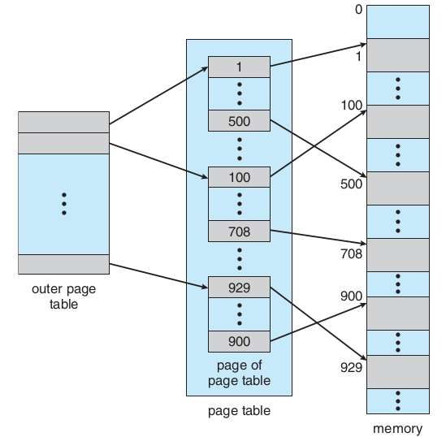
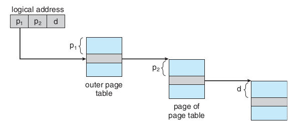
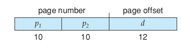
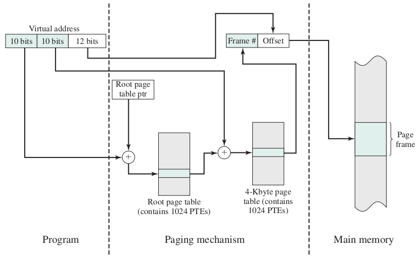
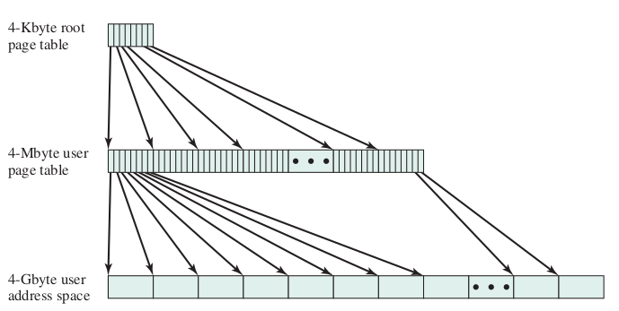
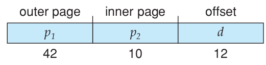
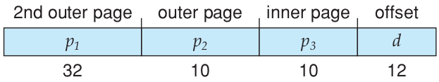
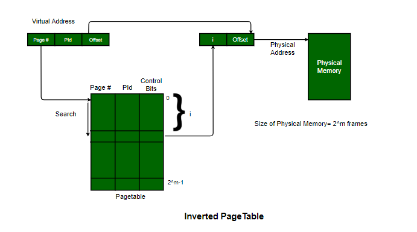
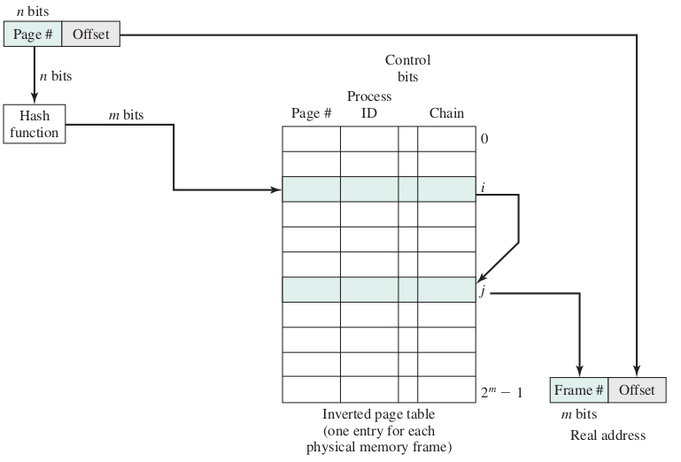
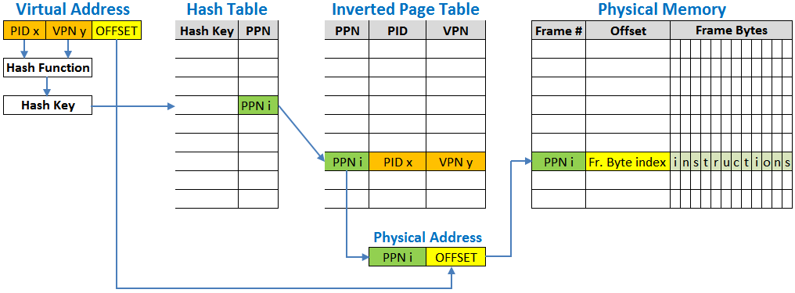
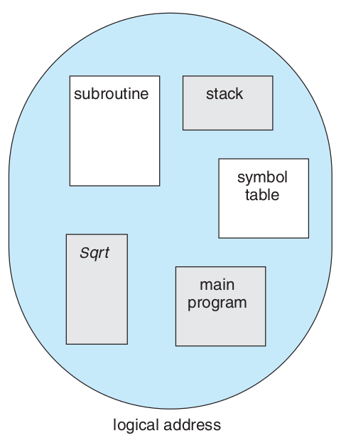
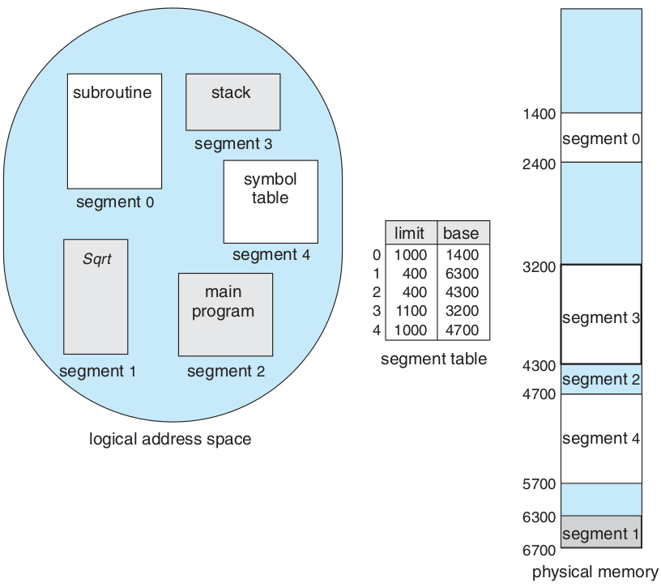
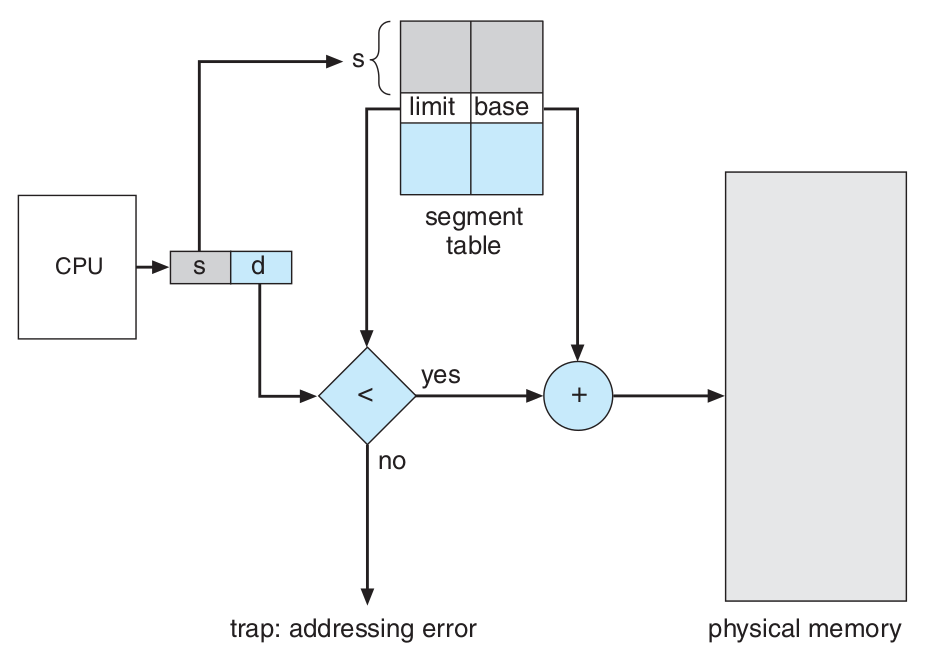
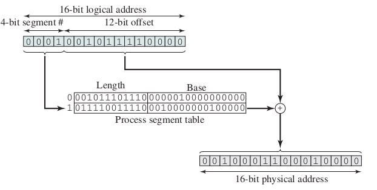
ترکیب قطعهبندی و صفحهبندی
مانند صفحهبندی دو سطحی با این تفاوت که در سطح یکم قطعهبندی انجام میشود و در سطح دوم صفحهبندی انجام میشود.
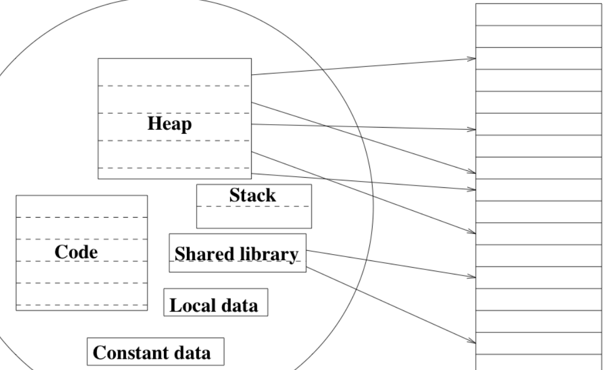
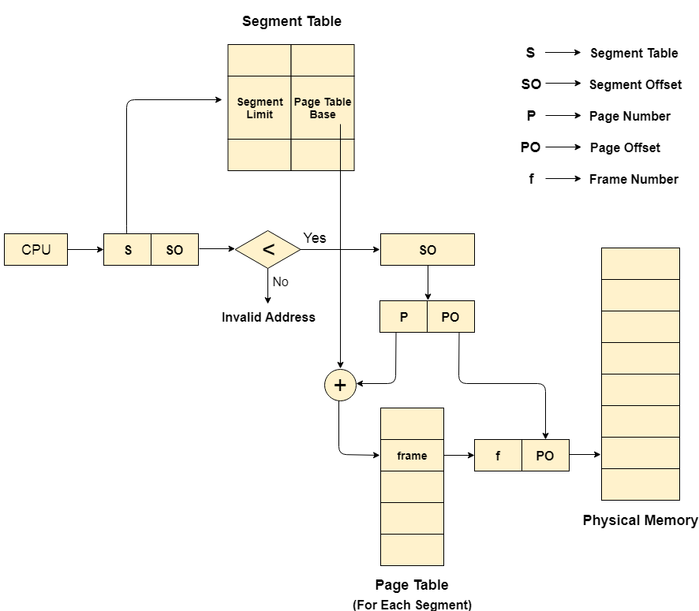
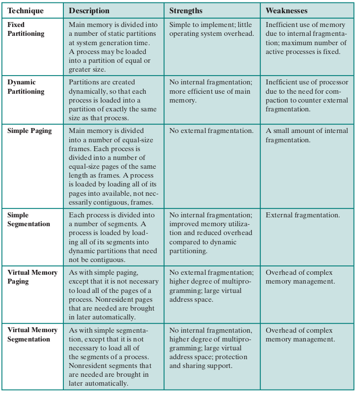
ساختار حافظهٔ قطعهبندی شده در پردازندههای اینتل ۳۲ بیتی (IA32)
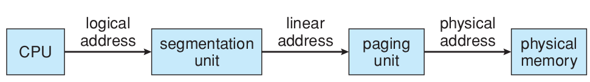
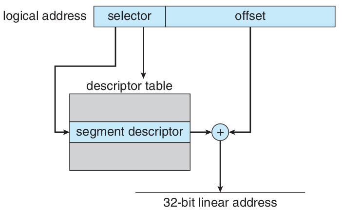
بیشترین حافظهای که میتواند پشتیبانی کند: 4GB
بیشترین تعداد قطعه در یک فرآیند: 16KB
بیشترین تعداد قطعهٔ اختصاصی برای یک فرآیند: 8KB برای دسترسی این بخش local descriptor table ( LDT ) به کار برده میشود.
بیشترین تعداد قطعهٔ اشتراکی برای یک فرآیند با دیگر فرآیندها: 8KB برای دسترسی به این بخش global descriptor table ( GDT ) به کار برده میشود.
شمارهٔ قطعه |
اختصاصی یا اشتراکی |
حفاظت |
|---|---|---|
13 |
1 |
2 |
ساختار حافظهٔ صفحهبندی شده در پردازندههای اینتل ۳۲ بیتی (IA32)
جدولِ صفحهٔ یکم |
جدولِ صفحهٔ دوم |
جابجایی |
|---|---|---|
۱۰ |
۱۰ |
۱۲ |
جدولِ صفحه |
جابجایی |
|---|---|
۱۰ |
۲۲ |
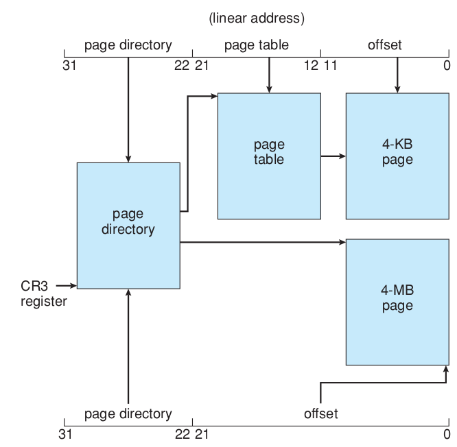
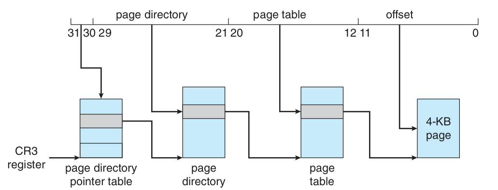
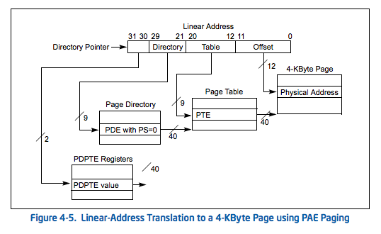
ساختار حافظه در پردازندههای «اِ اِم دی» ۶۴ بیتی (AMD64 یا x86_64 )
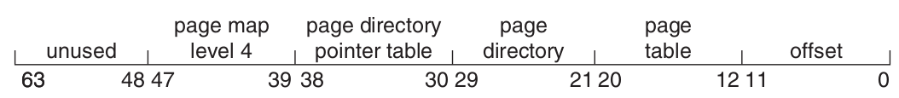
ساختار حافظه در پردازندههای «آرم» ۳۲ بیتی (ARM32)
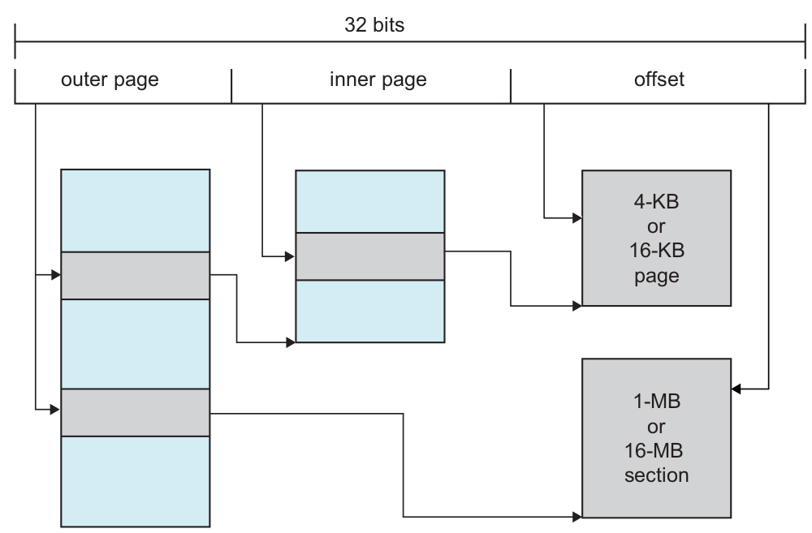
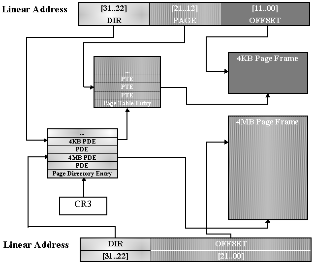
ساختار حافظهٔ قطعهبندی شده در پردازندههای اینتل ۳۲ بیتی (IA32)
بیشترین حافظهای که میتواند پشتیبانی کند: 4GB
بیشترین تعداد قطعه در یک فرآیند: 16KB
بیشترین تعداد قطعهٔ اختصاصی برای یک فرآیند: 8KB برای دسترسی این بخش local descriptor table ( LDT ) به کار برده میشود.
بیشترین تعداد قطعهٔ اشتراکی برای یک فرآیند با دیگر فرآیندها: 8KB برای دسترسی به این بخش global descriptor table ( GDT ) به کار برده میشود.
شمارهٔ قطعه |
اختصاصی یا اشتراکی |
حفاظت |
|---|---|---|
13 |
1 |
2 |
ساختار حافظهٔ صفحهبندی شده در پردازندههای اینتل ۳۲ بیتی (IA32)
جدولِ صفحهٔ یکم |
جدولِ صفحهٔ دوم |
جابجایی |
|---|---|---|
۱۰ |
۱۰ |
۱۲ |
جدولِ صفحه |
جابجایی |
|---|---|
۱۰ |
۲۲ |
ساختار حافظه در پردازندههای «اِ اِم دی» ۶۴ بیتی (AMD64 یا x86_64 )
ساختار حافظه در پردازندههای «آرم» ۳۲ بیتی (ARM32)
Sean K. Barker (https://tildesites.bowdoin.edu/~sbarker/)
http://blog.cs.miami.edu/burt/2012/10/31/virtual-memory-pages-and-page-frames/
https://samypesse.gitbooks.io/how-to-create-an-operating-system/Chapter-8/
https://www.cse.iitb.ac.in/~mythili/teaching/cs347_autumn2016/notes/07-memory.pdf
https://www.kernel.org/doc/html/latest/admin-guide/mm/index.html
https://www.geeksforgeeks.org/difference-between-internal-and-external-fragmentation/
https://binaryterms.com/contiguous-memory-allocation-in-operating-system.html
https://github.com/mor1/ia-operating-systems/wiki/06-Virtual-Addressing
https://www.faceprep.in/operating-systems/operating-systems-fragmentation-and-compaction/
http://images.bit-tech.net/content_images/2007/11/the_secrets_of_pc_memory_part_1/hei.png
https://upload.wikimedia.org/wikipedia/commons/c/c2/Write-back_with_write-allocation.svg
https://www.byclb.com/TR/Tutorials/dsp_advanced/ch1_1_dosyalar/image025.jpg
https://tutorialspoint.dev/computer-science/operating-systems/operating-systems-segmentation
https://www.cs.princeton.edu/courses/archive/spr11/cos217/lectures/18MemoryMgmt.pdf
https://www.cs.princeton.edu/courses/archive/spr11/cos217/lectures/18MemoryMgmt.pdf
https://www.geeksforgeeks.org/inverted-page-table-in-operating-system/
https://www.kernel.org/doc/gorman/html/understand/understand006.html
https://www.kernel.org/doc/gorman/html/understand/understand-html006.png
https://commons.wikimedia.org/wiki/File:Intel_D945GCCR_Socket_775.png
{kind=link}
{kind=link}
{kind=link}
{kind=link}
{kind=link}
{kind=link}
{kind=link}
{kind=link}